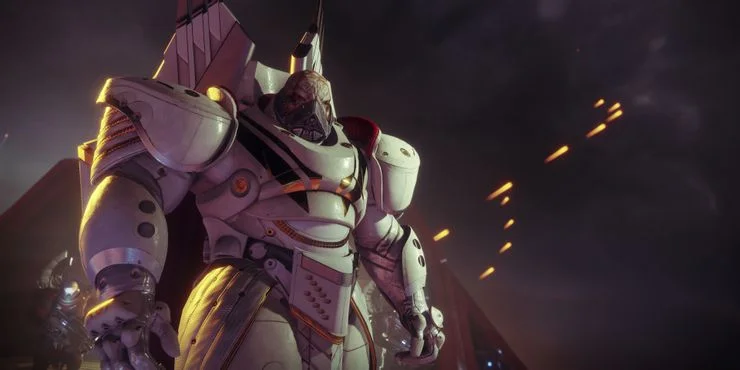
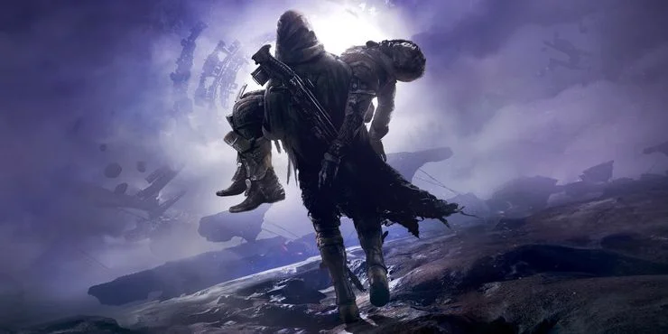
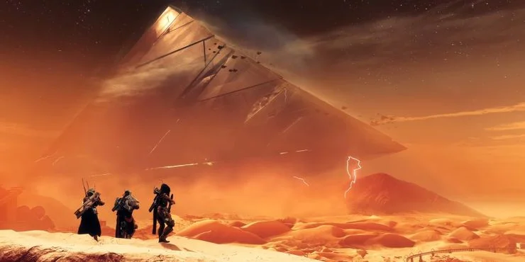
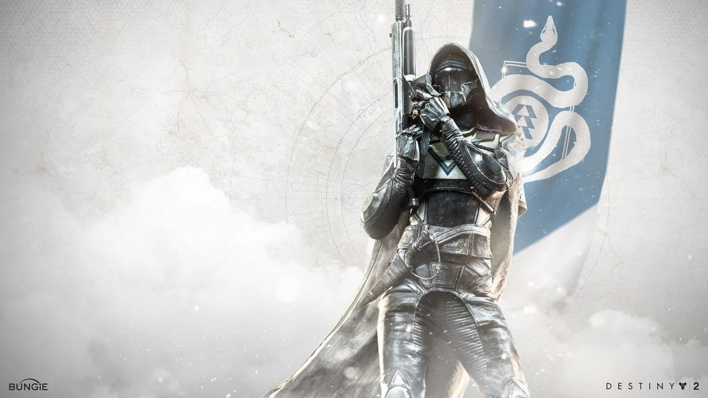
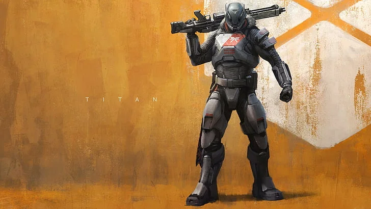
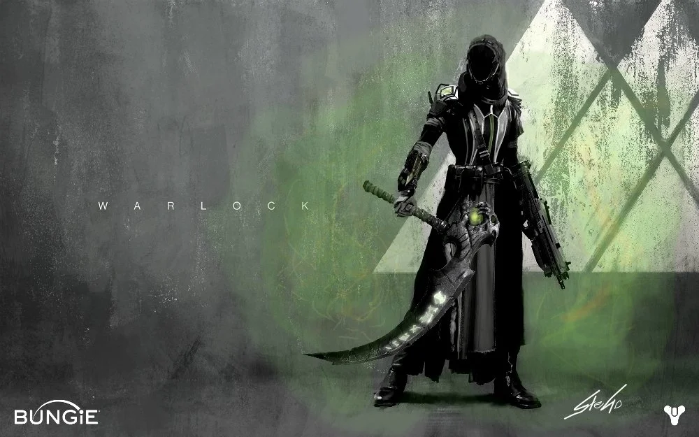
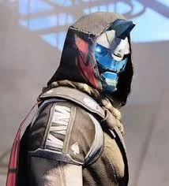
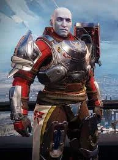
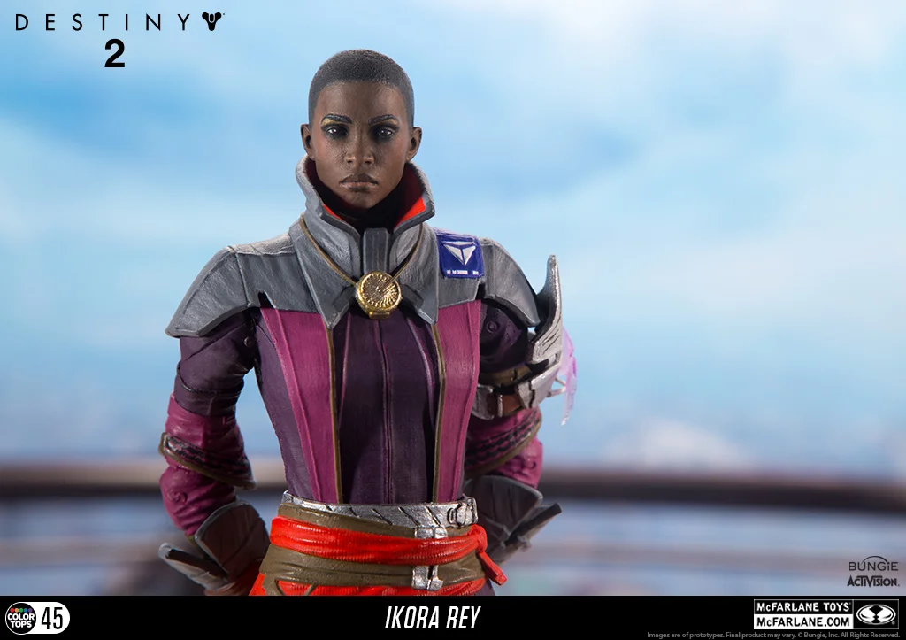

Historia de Destiny 2
Pocas franquicias de videojuegos tienen tanta tradición como Destiny. Si bien su narración ha sido impredecible durante la mayor parte de su vida útil, la tradición externa de Destiny contiene algunas de las mejores historias jamás escritas para un videojuego. Inmersiones profundas en la lógica de la espada de la colmena, historias de cómo se crearon los exóticos icónicos y bromas de ejecución se pueden encontrar en las pestañas de lore y grimorio de Destiny.
A lo largo del cuarto año de Destiny 2, Bungie ha hecho un cambio importante hacia la narración de historias semana a semana, mostrando eventos importantes dentro del juego en lugar de fuera de la pantalla. Ha resultado en uno de los mejores arcos de la historia que ha visto la franquicia, aunque puede ser bastante confuso entenderlo como un jugador nuevo o que regresa. Si te has perdido ciertas partes de la historia de Destiny 2, no temas. Este artículo cubrirá todos los ritmos principales de la historia, desde Beyond Light hasta Season of the Lost.
Un resumen rápido de los años anteriores de Destiny 2
Si eres completamente nuevo en Destiny 2 o no has jugado en años, aquí tienes un resumen rápido de los principales ritmos de la historia vinculados a cada temporada.
Resumen de la historia del año 1

Destiny 2 Vainilla: El Viajero es capturado por Dominus Ghaul y su ejército de la Legión Roja, un grupo de élite de Cabal. Los Guardianes tuvieron que recuperar sus poderes para retomar el Viajero y la Última Ciudad. Este período se conoce como “La Guerra Roja”
Maldición de Osiris: Los Guardianes rastrearon a Osiris a través del Bosque Infinito de Mercury. Con su ayuda, la humanidad pudo evitar que los Vex reescribieran la historia.
Warmind: Warmind Rasputin, una supercomputadora militarizada construida para proteger a la humanidad contra la Oscuridad, fue atacada por un dios gusano de la colmena llamado Xol. Los guardianes mataron a Xol con la ayuda de Rasputin y Ana Bray. Zavala desarrolla una relación hostil con Rasputin.
Resumen de la historia del año 2

Abandonado: Cayde-6, el último Hunter Vanguard, es asesinado por Uldren Sov. Los guardianes lo persiguen a través de Tangled Shore para buscar venganza. Se descubrió que Uldren fue corrompido por un Ahamkara llamado Riven, un dragón que concede deseos. Los guardianes viajan a la Ciudad de los Sueños para matar a Riven, lo que inadvertidamente condena a la ciudad a una maldición eterna.
Temporada de la fragua: Ada-1 forja armas de alta tecnología para que las manejen los Guardianes. Sus armas se perdieron cuando la Oscuridad llegó a Beyond Light.
Temporada del vagabundo: Los guardianes se enteran de que el Vagabundo tiene estrechos vínculos con los Nueve. Los guardianes ayudan a un Capitán Caído llamado Mithrax a evitar que las fuerzas de Eramis roben la tecnología SIVA.
Temporada de opulencia: Calus obtiene la Corona del dolor, un artefacto de la colmena de inmenso poder, con la ayuda de los Guardianes.
Resumen de la historia del año 3

Bastión de Sombras: Una nave Darkness se encuentra en las profundidades de la luna de la Tierra. Los guardianes descubren un extraño orbe de la pirámide que deja una cosa clara: se acerca la oscuridad.
Temporada de inmortal: Los vex invaden la Luna en gran número. Ikora construye un portal que conduce a la Mente Inmortal, la unidad Vex responsable de la invasión. La Mente Imperecedera es derrotada poco después.
Temporada del amanecer: Osiris construye el reloj de sol, un dispositivo para doblar el tiempo similar al Bosque Infinito. Los guardianes resucitan a Saint-14.
Temporada de los dignos: Rasputin descubre que la Oscuridad ha llegado al Sistema Solar. Zavala ayuda a regañadientes a Rasputín y Ana Bray a prepararse para el conflicto que se avecina.
Temporada de llegadas: Las naves de la Oscuridad llegan sin problemas, lo que hace que Rasputin se cierre por completo. Io, Marte, Titán y Mercurio fueron destruidos. La Oscuridad intentó hacer contacto con los Guardianes, aunque Savathûn lo interceptó. Eris Morn y Drifter le preguntan a The Nine la diferencia entre Light y Dark, a lo que aprenden que ambas fuerzas son bastante similares.
Clases de Destiny 2
Al igual que en Destiny 1, en Destiny 2 también contaremos con las tres clases básicas para cada personaje, que a diferencia de otros juegos similares, tienen un estilo de juego muy similar entre sí. La única diferencia entre ellos serán sus apariencia y sus poderes, ya que cada clase tendrá su propio árbol con habilidades.
Cazador
Maestros de la frontera, los cazadores son rápidos con el gatillo y letales con la espada, son astutos e implacables. Acechan en los campos de batalla y corren grandes riesgos a cambio de enormes recompensas.

Titán
Máquinas de guerra blindadas, ¿Quién necesita un escalpelo cuando se tiene un martillo? Los titanes son poderosos y están listos para la guerra, y no se amilanan frente a hordas de enemigos.

Hechicero
Portadores de poderes arcanos, los hechiceros son estudiosos de la Luz, y sus mentes albergan un arsenal de secretos letales. En el campo de batalla, esos secretos pueden hacer tambalear hasta la propia realidad

Personajes de Destiny 2
Actualmente, están confirmados tres personajes de la entrega anterior de Destiny, y que son los líderes de cada una de las facciones ya existentes. Seguirán siendo los líderes y jefes a los que habrá que ayudar en cada misión, solo que en esta ocasión en Destiny 2, nos acompañarán en alguna que otra ocasión y serán unos NPCs más participativos que antes:
Cayde-6
Líder de la Vanguardia de Cazadores - Sin duda el favorito de los fans, Cayde-6 fue protagonista del teaser tráiler y del reveal tráiler. El Espectro comentó una vez "Cayde es un cazador astuto, especialista en sobrevivir en los escenarios más salvajes. Pero participar en una guerra organizada no es su fuerte. No estoy seguro de que la estrategia de 'disparar hasta la muerte' sea suficiente". Posiblemente el personaje más simpático de todos los que encontraremos, y con el que también soltaremos alguna que otra carcajada.
Zavala
Líder de la Vanguardia de los Titanes - El comandante Zavalla es un veterano Titán que coordina la defensa de la Ciudad. En Destiny 2 veremos a este personaje en acción ahora que la última ciudad segura de la humanidad ha caído en manos de Lord Ghaul.
Ikora Rey
Líder de la Vanguardia de los Hechiceros - El papel de Ikora en la Vanguardia es el de estudiar las amenazas enemigas, especialmente cualquier amenaza no convencional de las fuerzas de la oscuridad, y normalmente es la primera en reaccionar ante ellas. En Destiny 2, su liderazgo será más necesario que nunca en la lucha de la humanidad contra Lord Ghaul y su Legión Roja.